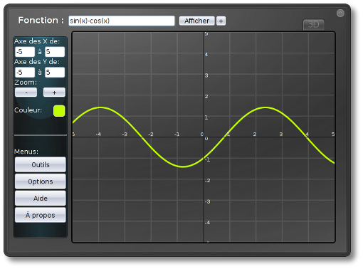
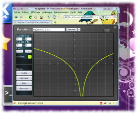

GraphMe

User's guide
- Introduction
- Installation
- Review widget
- View presentation
- Drawing the function
- Offset function
- The options menu
- the tools menu
- Drawing some functions
- GraphMe update
- Contact
1. Introduction
GraphMe is a app that is developed using html, javascript and css. It can be used for drawing graphs. This document must explain how to use GraphMe. This app have a different functions and some useful advices for users.
2. Installation
This widget can be downloaded from the Internet in a packed format. Before using it must be unpacked. GraphMe was developed for using in web-browsers and integration in Sankore. To add this app in Sankore you should copy folder named "GraphMe.wgt" in "../library/interactive/". For example, on "windows OS" GraphMe must be in folder with following path: "C: / Program Files / Sankore 4/library/interactive/GraphMe.wgt". If you have no Sankore then you can get it on http://getuniboard.com/.
Display GraphMe in browsers
A) To display this app in browser just enough to open the file named "Grapheur.xhtml" (it's in root folder) with your browser. But some browsers can not display app correctly. Below is the list of browsers that are able to display app:
- Mozilla Firefox (3.5) : Everything works fine.
- Internet Explorer (8.0) : Cannot open a widget, because .xhtml format is not recognized.
- Internet Explorer (pré-version 9.0) : Widget works but just using SVG. Canvas not supported yet.
- Konqueror (4.3.4) : Widget can be opened but there is some problems with displaying. It still occur when choosed display method "canvas".
- Opera (10.51) : Widget quite useful.
- Google Chrome (4.1) : Everything works very nice! 3D-display is faster as compared with other browsers.
B) To open widget in Sankore you should first open folder "Application" that is at the left of the screen. Then you must find this app and add it to the page.

Display GraphMe in Sankore

4. View presentation
- Place for functions display.
- Button for beginning the work.
- Button for adding new function or for getting access to functions history.
- Display.
- Parameters that define the part of graph that will be displayed.
- Buttons for zoom.
- Button for color changing.
- Buttons for access to menu.
- Tab-button that toggles 2D and 3D modes.
- Button for maximize the widget.

5. Drawing the function
To draw mathematical function just enter it at the top of widget and press button "Display". You can use different functions and predefined constants.
Basic operations:
- Addition → +
- Subtraction → -
- Multiplication → *
- Division → /
- Mod → %
Trigonometric functions
- sin(x), cos(x), tan(x), cot(x)
- asin(x), acos(x), atan(x), acot(x) ( ou arcsin(x), arccos(x), arctan(x), arccot(x) )
Square roots and degrees
- sqrt(x) is square root from x
- pow(x, y). Variable x to the power y. For examle:
x² → pow(x, 2)
(x+3)⁵ → pow((x+3), 5)
- root(x, y). Root y of x
Exponential and logarithm
- exp(x)
- ln(x) is natural logarithm.
- log(x) is decimal logarithm.
Rounding
- round(x) → rounding to the nearest whole number
- ceil(x) → rounding to the nearest whole number in a big way
- floor(x) → rounding to the nearest whole number the smaller side
Other predefined function
- abs(x) → Absolute number value
- random() → Return random number between 0 and 1
Also are available some constants:
- pi = 4 * atan(1) ≈ 3.141592653589793
- e = exp(1) ≈ 2.718281828459045
Not always it's easy to understand how to record a required function. Really if anywhere you err then graph will not displayed. Also do not forget about "*" (multiply) to multiply and "." (decimal point) to write point.
The two-dimensional function must be written as y=[...] and the three-dimensional function nust be written as z=[...]. Other examples are available to use in menu "Help" if you have some difficulties with function definition.
6. Offset function
Sometimes when you draw the function you don't see all necessary information about this function. In this case you can change position of graph.

To move the function graph just use a navigation arrows that are in the four edges of the display or mouse move tool (menu Service).
To define place to display you should enter a custom values in the left side of the widget. The left value must be less than the right value. In other case graph will not displayed.
You can increase or decrease the scale of displaying using buttons that are in the left menu. So you'll see more information about function. Zoom can be reset in options.
To open the menu you should click button "Options" that is in the left of the widget. If you click on this button again then menu will close. There are some buttons for navigation between options. Their short description:
- Changing a background image and color. In Sankore changing background theme used for displaying widget on black and white background.
- Display-method used for defining displaying function. There are 6 possibilities:
- SVG is a vector format of image and it can be built in HTML-page. It's compatible in most of browsers and Sankore support it very well so is it selected default.
- « SVG (une image) » ne présente que peu de différence avec la méthode d'affichage « SVG ». A moins d'un problème de compatibilité, il n'est pas très utile de la choisir.
- Canvas est une nouvelle balise présente depuis HTML 5.0. Elle permet de définir une zone dans laquelle on peut faire des dessins. Cette méthode d'affichage est plus rapide que d'utiliser du SVG, cependant, elle n'est pas complètement compatible dans sankore. Il est conseillé de choisir cette option si vous utilisez le widget ailleurs que dans sankore.
- Canvas (point) utilise aussi canvas, mais dessine des points à la place de lignes.
- XPM est un format d'image très peu connu. De ce fait, il est compatible qu'avec une minorité de navigateur.
- La méthode d'affichage « Uniboard » permet de dessiner directement sur la page d'sankore avec les outils de dessins.

- Le zoom par défaut ainsi que le bouton « réinitialiser le zoom » permettent de remettre l'affichage à l'état qu'il était à l'ouverture du widget. Cela permet aussi de centrer l'affichage sur l'origine.
- Les options d'affichage permettent d'afficher ou non la grille, les axes ainsi que l'échelle. Elles sont utiles pour rendre l'affichage plus lisible. Il est également possible de modifier l'épaisseur du trait de la fonction.
- Le décalage du graphique n'a en principe pas besoin d'être utilisé. Il permet de déplacer tout l'affichage dans un sens ou dans l'autre, s'il n'est pas centré à la bonne place. Cela peut arriver avec certains navigateurs Internet.
- La précision des calculs du graphique permet d'augmenter ou de diminuer le nombre de points calculés. Plus le nombre est petit, plus la précision est grande. Il est utile de mettre cette valeur à « 0.01 » si vous dessinez des fonctions ressemblant à 0.5*sin(10*x*x).
- Dans les options 3D, le style d'affichage permet de choisir comment la fonction est dessinée : avec des petits points ou avec des polygones (surfaces). La plupart des fonctions sont plus jolies en dessinant la surface entre les points calculés. Toutefois, c'est mieux de dessiner des points pour des fonctions comme la demi-sphère : sqrt(12-x*x-y*y).
- Dans le dernier onglet, vous pouvez modifier d'autres options 3D, comme la précision des calculs ainsi que la couleur de la fonction.
Ce menu permet tout d'abord de choisir l'action de la souris sur le graphique. Il y a le choix entre trois possibilités :
- L'outil sélectionné par défaut est le point. En bougeant la souris, un point se déplace sur la fonction et les coordonnées de ce point sont indiquées en haut à gauche de l'affichage.
- Le deuxième outil est le déplacement. Il permet de déplacer le graphique avec la souris. Il suffit de tenir cliqué sur l'affichage et de bouger la souris. Malheureusement, cet outil peut être lent sur certains navigateurs.
- Le troisième outil est la tangente. Cet outil dessine la tangente à la fonction au point où se trouve la souris.
Ensuite, ce menu permet aussi de calculer un point de la fonction. Il faut simplement entrer la coordonnée « x » du point dont on veut trouver la coordonnée « y », et appuyer sur le bouton « Évaluer ». Par exemple, si la fonction est « x*x » et qu'on défini « x=2 », alors le point dont la coordonnée sur l'axe des X est « 2 » aura comme coordonnée sur l'axe des Y « 4 ».
Un autre outil très utile est l'étude de fonction. Pour étudier la fonction entrée dans le champ en haut du widget, cliquez sur « démarrer l'étude ». Les études de fonction de ce widget ne sont pas fiables à 100% mais servent de complément à une étude de fonction que l'on fait soi-même. Il se peut que cet outil soit amélioré dans une prochaine version du widget.
Dans ce menu, on trouve également des tests d'affichage. Ils permettent d'essayer les différentes méthodes d'affichage et de voir si elles fonctionnent sur le navigateur internet utilisé.
9. Dessiner plusieurs fonctions
Pour dessiner plusieurs fonctions simultanément, cliquez sur le petit bouton « + » qui se situe à droite du bouton « Afficher » (point 1). Ensuite, un menu apparaît.

Dans ce menu, des onglets permettent d'aller à l'historique ou aux fonctions supplémentaires (point 2). Pour ajouter une fonction, cliquez sur le bouton à droite de la fonction actuelle (point 3). En dessous, une liste contient toutes les fonctions affichées (point 4). Pour supprimer une fonction, il faut simplement cliquer sur le bouton « - » à coté de celle-ci. Il est également possible de modifier la couleur de chaque fonction séparément.
L'historique permet de revoir toutes les fonctions qui ont déjà été dessinées. Lorsque l'on clique sur une fonction de l'historique, celle qui est dessinée actuellement est remplacée par la fonction de l'historique.
Dessiner plusieurs fonctions simultanément est uniquement possible avec la méthode d'affichage « canvas » en deux dimensions. Par contre, l'historique est utilisable avec toutes les méthodes d'affichage.
10. Mettre à jour GraphMe
La dernière version du widget est téléchargeable sur la page suivante : http://gyb.educanet2.ch/tm-widgets/.ws_gen/?15. Pour mettre à jour GraphMe, vous pouvez aussi cliquer sur le bouton "Mise à jour" dans le menu des options.
Si vous voulez rapporter un bug, avez une suggestion par rapport au widget ou voulez simplement poser une question, merci de me contacter par e-mail à l'adresse : yannick.vessaz@gmail.com.